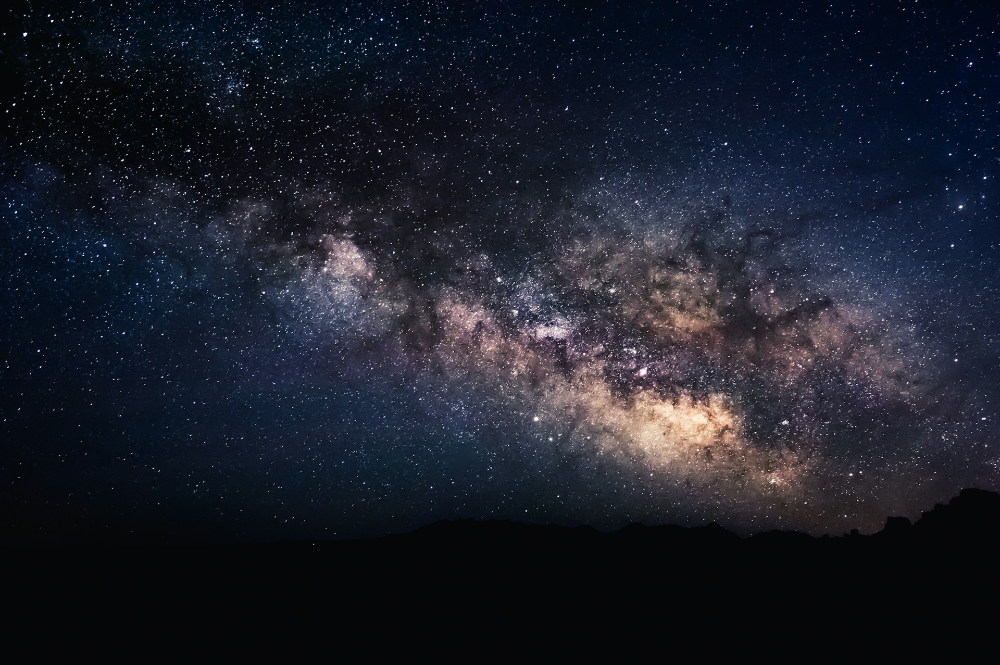
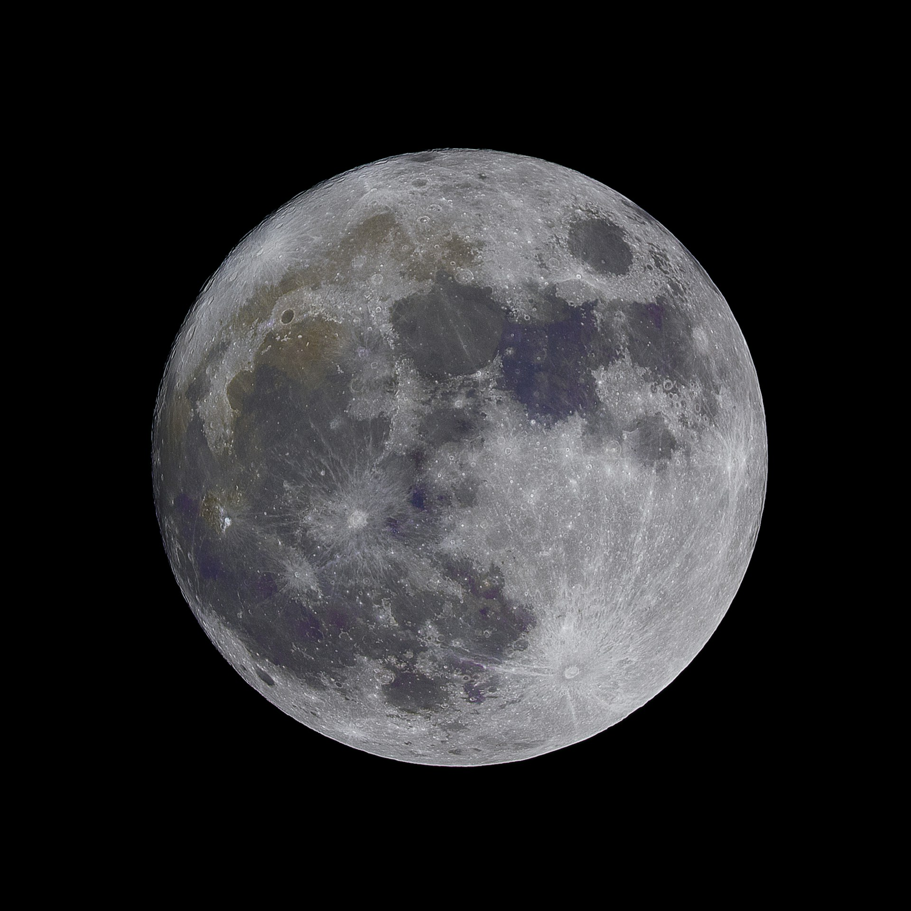

The Moon is a satellite of the Earth and has been orbiting it for over 3.5 billion years. The Moon has a mass of 7.34 x 10²²kg. It completes a full orbit around the Earth every 27.3 days. The Moon's mass ranges from -240°C to 117°C. It's important to note that the Moon always faces the same side toward the Earth, making it impossible to see the rest of it. The Moon is also gradually moving away from the Earth, approximately 4 centimeters per year.
| Property | Description |
|---|---|
| Mean Diameter | 3,475km |
| Mean Radius | 1,737km |
| Mass | 7,34 x 1022kg |
| Surface Gravity | 1,62m/s2 |
| Earth-Moon Distance | ~384,400km |
| Surface Rock Age | Mostly 3-4 billion years |
| Formation Age | Approximately 4,5 billion years |